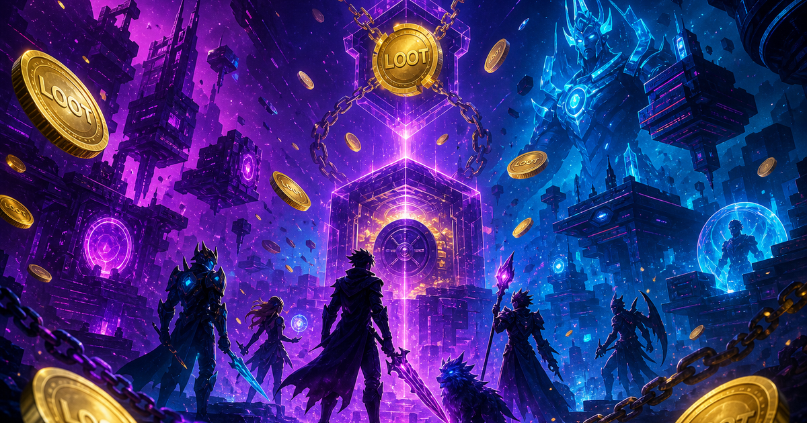

Realm Conquest
Strategy game — hex conquest proofs mint REALM.
Chain Bridges · Optimism
LOOT token is the lifeblood connecting all fragments of four independent game worlds on Optimism. Play free games, earn through play to earn, stake heroes, and trade in a unified web3 gaming economy.

Not every wound from the Sundering was stone or steel. When the Seal of Unity shattered, it sprayed crystallized intent across a new plane — the Chain Bridges, where value moves faster than armies.
REALM became the empire's nervous system trying to heal itself. Lords in Realm Conquest, pilots in Neon Drift, and assassins in Shadow Strike rarely meet face to face, but their wallets speak one language. Play any free game, prove your deed on chain, and the fragment you serve sends token lifeblood back to you.
On Optimism, gas is cheap enough that rewards feel like loot drops, not tax forms. Archivists still debate whether GameFi reunites the realm or becomes a fifth fragment that devours the others. The contracts do not argue — they only settle.
Play to earn infrastructure for the whole portfolio.
Earn from gameplay scores and daily faucet on testnet. The connective tissue of web3 gaming in the universe.
Mint heroes with rarity rolls tied to your play history across strategy, shooter, and brawler titles.
Passive REALM yield from staking. Trade assets on the built-in marketplace.
OP Chain delivers fast, low-cost transactions for high-frequency play to earn loops.
Every title feeds the same REALM economy.
The lifeblood connecting all standalone game fragments on Optimism. Earn it by playing and using the GameFi dApp.
L2 speed and low fees make play to earn practical — rewards land without mainnet gas pain.
Games are free. Testnet offers a daily faucet. You only need a wallet and minimal gas for on-chain actions.
cd gamefi && npm install && npm run dapp — or npm run gamefi from root. See gamefi README for deploy and signer setup.